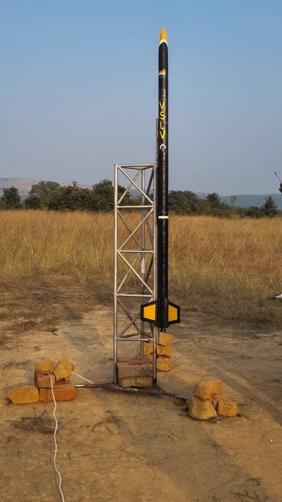
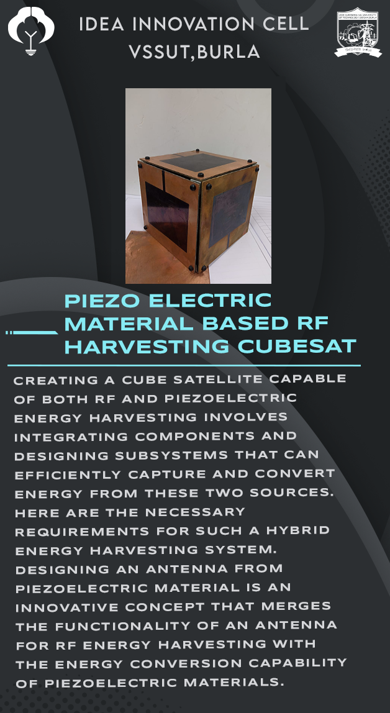

VSSUT-ISRO Related Projects

VSLV: VSSUT Satellite Launch Vehicle
Student-built launch vehicle project focusing on propulsion, structure, and avionics.

CANSAT: Rocket Payload
Designed and tested a payload system for atmospheric data acquisition and recovery.
IMU Based Fin Vecotring for Sounding Rocket (VSLV)
Designed and tested a payload system for atmospheric data acquisition and recovery.

Energy Harvesting CubeSAT
Concept design for RF/piezo-based energy harvesting in space systems.